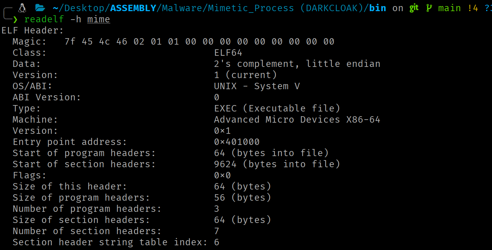

ELF Internals
What an ELF binary contains and how the kernel interprets it to turn it into a process
Context
This article covers the internal structure of Linux's native binary format. Understanding how the kernel interprets and loads an ELF is a prerequisite for any offensive technique that manipulates binaries, injects code or implements custom loaders.
Introduction¶
The Executable and Linkable Format (ELF) is the native binary format of the Linux ecosystem. Every executable binary, shared library and relocatable object on a Linux system is an ELF file.
Segment/Section Duality¶
The ELF architecture presents a fundamental duality. The same file can be described simultaneously through two complementary views:
- The execution view organizes content into segments (described by the Program Header Table). Segments represent how the kernel maps the binary into virtual memory when the program runs.
- The linking view organizes content into sections (described by the Section Header Table). Sections are logical units with specific semantics used by the linker during the ELF binary build process and by static analysis tools.
!!! note "" The Section Header Table is dispensable at runtime.
Both views are ways of interpreting the same ELF at different phases of the program's lifecycle (construction (linking) and execution (loading)).
Physical File Layout¶
A 64-bit ELF file has the following canonical physical layout:
Offset 0x00: ELF Header (64 bytes)
Offset e_phoff: Program Header Table (e_phnum × 56 bytes)
[Segment contents: data, code, etc.]
Offset e_shoff: Section Header Table (e_shnum × 64 bytes)
The ELF Header invariably begins at offset 0 of the file. The Program Header Table is usually placed immediately after the header (offset 0x40 in 64-bit binaries), although the specification does not impose this constraint. The Section Header Table is conventionally placed at the end of the file, but can equally reside at any valid offset. The actual contents (code, data, symbol tables) occupy the intermediate regions, referenced via offsets from the header tables.
ELF Header¶
The ELF Header is the first structure of every ELF file and acts as the entry point for interpreting the entire binary. It occupies the first 64 bytes of the file in the 64-bit variant and provides the kernel, linker and analysis tools with all the information needed to locate and decode the rest of the content.
Elf64_Ehdr Structure¶
typedef struct elf64_hdr {
unsigned char e_ident[EI_NIDENT]; /* ELF "magic number" */
Elf64_Half e_type; /* File type */
Elf64_Half e_machine; /* Target architecture */
Elf64_Word e_version; /* ELF format version */
Elf64_Addr e_entry; /* Entry point virtual address */
Elf64_Off e_phoff; /* Program header table file offset */
Elf64_Off e_shoff; /* Section header table file offset */
Elf64_Word e_flags; /* Architecture-specific flags */
Elf64_Half e_ehsize; /* Size of this header in bytes */
Elf64_Half e_phentsize; /* Size of each program header entry */
Elf64_Half e_phnum; /* Number of program header entries */
Elf64_Half e_shentsize; /* Size of each section header entry */
Elf64_Half e_shnum; /* Number of section header entries */
Elf64_Half e_shstrndx; /* Index of the .shstrtab section */
} Elf64_Ehdr;
The data types used in the 64-bit variant are: Elf64_Half = __u16 (2 bytes), Elf64_Word = __u32 (4 bytes), Elf64_Addr = __u64 (8 bytes), Elf64_Off = __u64 (8 bytes).
To inspect the ELF header fields:

Relevant Structure Fields¶
e_ident
The first 16 bytes encode the binary's identification and fundamental properties:
| Index | Constant | x86-64 value | Meaning |
|--------|-----------|--------------|---------|
| 0 | `EI_MAG0` | `0x7f` | First byte of the magic number |
| 1 | `EI_MAG1` | `0x45 ('E')` | Second byte of the magic number |
| 2 | `EI_MAG2` | `0x4c ('L')` | Third byte of the magic number |
| 3 | `EI_MAG3` | `0x46 ('F')` | Fourth byte of the magic number |
| 4 | `EI_CLASS` | `2 (ELFCLASS64)` | Class: 64-bit |
| 5 | `EI_DATA` | `1 (ELFDATA2LSB)` | Endianness: little-endian |
| 6 | `EI_VERSION` | `1 (EV_CURRENT)` | Format version |
| 7 | `EI_OSABI` | `0 (ELFOSABI_NONE)` | OS ABI |
| 8 | `EI_PAD` | `0` | Padding (bytes 8–15 set to zero) |
!!! note ""
The kernel performs the following validations with the ELF Header data: magic bytes = \177ELF (0x7f 0x45 0x4c 0x46), e_type ∈ {ET_EXEC, ET_DYN}, e_machine compatible with the architecture (EM_X86_64 = 62 on x86-64), and e_phentsize = 56. If any check fails, it returns -ENOEXEC.
e_type
Nature of the file. ET_REL (1) = relocatable object (.o), ET_EXEC (2) = executable with absolute addresses, ET_DYN (3) = shared object / PIE executable, ET_CORE (4) = core dump.
e_machine
Architecture. For x86-64: 62 (EM_X86_64).
e_entry
Virtual address of the entry point (_start). In non-PIE binaries (ET_EXEC), this is a fixed absolute address. In PIE binaries (ET_DYN), it is an offset relative to the load base, which the kernel adds to the base address established by ASLR.
e_phoffande_shoff
Byte offsets of the PHT and SHT within the file.
e_phentsize
Size of each PHT entry (56 bytes for ELF64).
e_shentsize
Size of each SHT entry (64 bytes for ELF64).
e_phnum
Number of entries in the PHT.
e_shnum
Number of sections in the SHT.
e_shstrndx
Index of the .shstrtab section (contains section names as null-terminated strings).
```asm
; .shstrtab
00
2e 74 65 78 74 00 ; ".text"
2e 64 61 74 61 00 ; ".data"
2e 62 73 73 00 ; ".bss"
2e 73 68 73 74 72 74 61 62 00 ; ".shstrtab"
```
e_flags
Architecture-specific flags. On x86-64, always 0.
Program Headers¶
With the ELF Header covered, the next critical structure for loading the binary into memory is the Program Header Table (PHT). This table describes the binary's segments, contiguous blocks of data that the kernel maps directly into the process's virtual address space.
Elf64_Phdr Structure¶
Each PHT entry is 56 bytes:
typedef struct elf64_phdr {
Elf64_Word p_type; /* Segment type */
Elf64_Word p_flags; /* Permission flags (RWX) */
Elf64_Off p_offset; /* Offset of the segment in the file */
Elf64_Addr p_vaddr; /* Virtual load address */
Elf64_Addr p_paddr; /* Physical address (unused on Linux) */
Elf64_Xword p_filesz; /* Size of the segment in the file */
Elf64_Xword p_memsz; /* Size of the segment in memory */
Elf64_Xword p_align; /* Segment alignment */
} Elf64_Phdr;
Entry N is located at: e_phoff + (N × 56). In memory (via auxv): AT_PHDR + (N × AT_PHENT).
To inspect the PHT data of an ELF file:

Relevant Structure Fields¶
-
Segment types (
p_type) -
PT_LOAD
Loadable segment. Each PT_LOAD defines a region that the kernel maps into the process's virtual address space via mmap. A typical binary contains two or three PT_LOAD segments: one for code (RX), one for data (RW) and optionally one for read-only constants (R).
PT_DYNAMIC
Points to the information needed for dynamic linking. It typically contains the .dynamic section, which consists of an array of Elf64_Dyn structures and serves as the main table used by the dynamic linker (usually ld-linux.so).
PT_INTERP
Path to the ELF interpreter (dynamic linker). The kernel reads this path and loads the interpreter as a second ELF binary before transferring control. A statically linked executable lacks this segment.
PT_PHDR
Indicates where the PHT itself is loaded in memory. This allows the ELF interpreter to directly locate the segment table during dynamic loading of the executable, without needing to re-read the ELF Header from disk.
PT_NOTE
Auxiliary information (notes).
PT_TLS
Template for Thread-Local Storage. Defines the data block that each thread receives as a private copy.
-
Permissions (
p_flags)```c
define PF_X 0x1 / Execute /¶
define PF_W 0x2 / Write /¶
define PF_R 0x4 / Read /¶
```
The kernel translates these flags to page protections (minimum granularity):
| ELF combination (`p_flags`) | Page protection | Use | Relevant sections |
|---|---|---|---|
| `PF_R` | `PF_X` | `PROT_READ` | `PROT_EXEC` | Executable code | `.text` |
| `PF_R` | `PF_W` | `PROT_READ` | `PROT_WRITE` | Modifiable data | `.data` and `.bss` |
| `PF_R` | `PROT_READ` | Read-only data | `.rodata` |
Alignment and Range Calculation¶
The actual memory range of a segment is rounded up to the next multiple of p_align:
The mmap, munmap, mremap and mprotect syscalls operate at page granularity. Any operation on segment mappings must use aligned ranges.
Loading an ELF Binary by the Kernel¶
When a process invokes the execve syscall, the kernel does not know in advance what format the binary has. Linux supports multiple binary formats, each linked to a handler in a linked list. The kernel iterates that list and passes the file to each handler until one accepts it.
For ELF, the handler is load_elf_binary. The function begins by validating the ELF Header (magic bytes, e_type, e_machine, e_phentsize). If validation fails, it returns -ENOEXEC and the kernel continues trying the next handler in the list.
Once validation passes, the kernel iterates the PHT looking for two segment types:
- Detection of
PT_INTERP
If the PHT contains aPT_INTERPsegment, the kernel reads the dynamic interpreter's path and maps it into the new address space alongside the main binary's segments. A statically linked binary has noPT_INTERP, so the kernel transfers control directly to its entry point.
!!! note ""
execve does not create a new process. It replaces the image of the process that invokes it. The PID remains the same. The kernel discards the invoking process's address space and builds a new one where it maps the segments of the binary to execute.
- Mapping
PT_LOADsegments
EachPT_LOADsegment in the PHT describes a byte range of the ELF file (p_offset,p_filesz), the address in virtual memory where those bytes should be placed (p_vaddr) and the permissions for that region (p_flags). If the segment requires more memory than it occupies in the file (p_memsz > p_filesz), the kernel extends the region with zero-initialized memory. This difference corresponds to the.bssregion, global variables with no initial value.
!!! note ""
Each PT_LOAD generates one or more VMAs in the process's mm_struct.
The address calculation depends on the binary type:
- In
ET_EXEC(non-PIE):p_vaddris an absolute virtual address. The kernel maps the segment exactly at that address. Each execution produces the same memory layout. - In
ET_DYN(PIE): the kernel selects a random base address (due to ASLR) and addsp_vaddras an offset. Each execution produces a different layout. The randomization makes attacks that depend on knowing code or data addresses harder.
Auxiliary Vector¶
After mapping the segments, the kernel builds the process's initial stack, placing argc, argv[] pointers, envp[] pointers and the auxiliary vector on it. The auxv is an array of key-value pairs that conveys to user space the information the kernel knows at load time: the address of the PHT in memory (AT_PHDR), the size of each entry (AT_PHENT), the number of entries (AT_PHNUM), the program's entry point (AT_ENTRY) and the interpreter's base address (AT_BASE).
These values allow the dynamic interpreter (and the process itself) to locate the binary's structures without accessing the file on disk. Without them, the interpreter would have no way to locate the PHT of the program it must process.
Initial Stack Layout¶
[ high end ]
+----------------------------------+
| argv, envp, filename strings | NULL-terminated bytes
+----------------------------------+
| alignment padding (16 B) |
+----------------------------------+
| AT_NULL (0x00, 0x00) | 16-byte NULL: auxv terminator
| ... |
| AT_ENTRY (0x09, address) | 16 bytes per entry
| AT_PHNUM (0x05, value) |
| AT_PHENT (0x04, value) |
| AT_PHDR (0x03, address) | start of auxv
+----------------------------------+
| NULL | 8-byte NULL: envp[] terminator
| envp[n-1] (pointer) |
| ... |
| envp[0] (pointer) |
+----------------------------------+
| NULL | 8-byte NULL: argv[] terminator
| argv[argc-1] (pointer) |
| ... |
| argv[0] (pointer) |
+----------------------------------+
| argc | 8 bytes (unsigned long)
+----------------------------------+
↑ RSP points here at the entry point
Each auxv entry consists of two consecutive unsigned long values (16 bytes):
typedef struct {
uint64_t a_type; /* AT_PHDR, AT_ENTRY, AT_RANDOM, etc. */
uint64_t a_val; /* associated value */
} Elf64_auxv_t;
The array terminates when a_type == AT_NULL.
Relevant Entries¶
a_type |
Constant | Content |
|---|---|---|
| 3 | AT_PHDR |
In-memory address of the executable's PHT |
| 4 | AT_PHENT |
Size of each Elf64_Phdr (56 bytes) |
| 5 | AT_PHNUM |
Number of program headers |
| 6 | AT_PAGESZ |
System page size (4096 bytes) |
| 7 | AT_BASE |
Load base address of the dynamic interpreter |
| 9 | AT_ENTRY |
Entry point of the executable |
| 23 | AT_SECURE |
1 if the binary is setuid/setgid |
| 25 | AT_RANDOM |
Pointer to 16 random bytes (stack canary seed) |
| 33 | AT_SYSINFO_EHDR |
Address of the vDSO mapped in the process |
The kernel generates exactly one entry per a_type, with no duplicates. The auxv is not optional. The kernel generates it unconditionally for every ELF process, static or dynamic.
Introspection via auxv¶
With the values of AT_PHDR, AT_PHENT and AT_PHNUM, the process can traverse its own PHT in memory and locate any segment.
In a PIE binary, the p_vaddr addresses of each segment are offsets relative to a load base that the kernel chooses randomly (ASLR). The auxv does not contain that base directly, but it can be derived, AT_PHDR indicates where the PHT ended up in memory after loading, and p_offset of the first segment indicates how far from the start of the file the PHT was. Since the kernel maps the file from the base, the relationship is base = AT_PHDR - p_offset. With the base known, the real address of any segment is base + p_vaddr. In non-PIE binaries (ET_EXEC), p_vaddr addresses are absolute and this calculation is not needed.
This mechanism allows code to resolve the process's memory layout without accessing /proc/self/maps, avoiding the openat/read/close syscalls that a security monitor might detect. The auxv data is already on the process's stack, so accessing it is a simple memory read, invisible to any syscall-level tracing mechanism.
Section Headers¶
While segments define the execution view, sections provide the linking and analysis view. The SHT is not needed for execution, but is indispensable for linkers, debuggers and static analyzers.
Elf64_Shdr Structure¶
Each entry is 64 bytes:
typedef struct elf64_shdr {
Elf64_Word sh_name; /* Index in .shstrtab for the name */
Elf64_Word sh_type; /* Section type */
Elf64_Xword sh_flags; /* Section attributes */
Elf64_Addr sh_addr; /* Virtual address at execution */
Elf64_Off sh_offset; /* Offset of the section in the file */
Elf64_Xword sh_size; /* Size of the section in bytes */
Elf64_Word sh_link; /* Index of a related section */
Elf64_Word sh_info; /* Additional information */
Elf64_Xword sh_addralign; /* Alignment requirement */
Elf64_Xword sh_entsize; /* Entry size (if a table) */
} Elf64_Shdr;
The sh_addr field of the section, when non-zero, indicates the virtual address the section occupies in memory. Comparing with the ranges [p_vaddr, p_vaddr + p_memsz) of each PT_LOAD segment determines which sections belong to which segment.
To inspect the SHT data of an ELF file:

Relevant Structure Fields¶
-
Section types (
sh_type)Value Constant Description 0 SHT_NULLInactive entry 1 SHT_PROGBITSProgram-defined content (code, data) 2 SHT_SYMTABFull symbol table (linking) 3 SHT_STRTABString table 4 SHT_RELARelocation entries with explicit addend 6 SHT_DYNAMICDynamic linking information 7 SHT_NOTEAuxiliary information 8 SHT_NOBITSSection with no file content ( .bss)9 SHT_RELRelocation entries without addend 11 SHT_DYNSYMDynamic symbol table -
Section flags (
sh_flags)Value Constant Meaning 0x1SHF_WRITEWritable during execution 0x2SHF_ALLOCOccupies memory during execution 0x4SHF_EXECINSTRContains executable instructions 0x10SHF_MERGECan be merged to eliminate duplicates 0x20SHF_STRINGSContains null-terminated strings 0x400SHF_TLSThread-local data
Kernel-specific flags: SHF_RELA_LIVEPATCH (0x00100000) marks relocation sections for live patching, SHF_RO_AFTER_INIT (0x00200000) marks sections that become read-only after kernel initialization.
Fundamental Sections¶
Executable Code .text¶
- Type:
SHT_PROGBITS - Attributes:
SHF_ALLOC | SHF_EXECINSTR - Segment:
PT_LOADwith permissionsPF_R | PF_X - Contains the program's machine code. The entry point (
e_entry) normally points inside.text.
Read-only Data .rodata¶
- Type:
SHT_PROGBITS - Attributes:
SHF_ALLOC - Segment:
PT_LOADwith permissionsPF_R - Constants: text strings, lookup tables, numeric constants…
Initialized Data .data¶
- Type:
SHT_PROGBITS - Attributes:
SHF_ALLOC | SHF_WRITE - Segment:
PT_LOADwith permissionsPF_R | PF_W - Static and global variables initialized with non-null values. The initial values are copied from the file into the memory mapping during loading.
Uninitialized Data .bss¶
- Type:
SHT_NOBITS - Attributes:
SHF_ALLOC | SHF_WRITE - Segment: Located in the data
PT_LOAD(PF_R | PF_W) - Global and static variables initialized to zero or left uninitialized.
Global Offset Table .got and .got.plt¶
- Type:
SHT_PROGBITS - Attributes:
SHF_ALLOC | SHF_WRITE - Segment:
PT_LOADwith permissionsPF_R | PF_W - The GOT is the central structure for dynamic linking when accessing external data and functions.
On x86-64 it is split into:
.got
Entries for imported global variables and addresses resolved via eager binding.
.got.plt
Entries for imported functions, resolved via lazy binding.
Procedure Linkage Table .plt, .plt.sec and .plt.got¶
- Type:
SHT_PROGBITS - Attributes:
SHF_ALLOC | SHF_EXECINSTR - Segment:
PT_LOADwith permissionsPF_R | PF_X - Code section with trampoline stubs for each imported function:
.plt
Fallback stubs for lazy binding (not called directly by program code).
.plt.sec
Stubs that program code calls directly when invoking an imported function.
.plt.got
Stubs for imported functions whose address is stored in a variable (function pointer) rather than called directly.
Symbol Tables¶
Symbol tables associate names with addresses, sizes and attributes.
Elf64_Sym Structure¶
Each entry is 24 bytes:
typedef struct elf64_sym {
Elf64_Word st_name; /* Index in the string table (4 bytes) */
unsigned char st_info; /* Symbol type and binding (1 byte) */
unsigned char st_other; /* Visibility (1 byte) */
Elf64_Half st_shndx; /* Index of associated section (2 bytes) */
Elf64_Addr st_value; /* Symbol value (address) (8 bytes) */
Elf64_Xword st_size; /* Size of the associated object (8 bytes) */
} Elf64_Sym;
A binary can contain two distinct tables:
.symtab(typeSHT_SYMTAB)
Contains all symbols: local functions, static variables, internal labels…
.dynsym(typeSHT_DYNSYM)
Contains only the symbols needed for dynamic linking: imported/exported functions and variables.
Acknowledgements¶
Thanks for making it this far.
If you find errors or want to improve/extend the article, the blog content is open to Pull Requests. All contributions are welcome.
See you in the next article! ;)